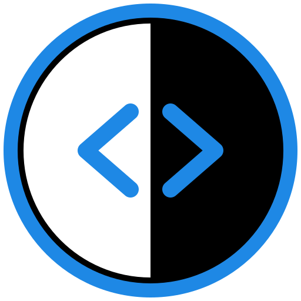
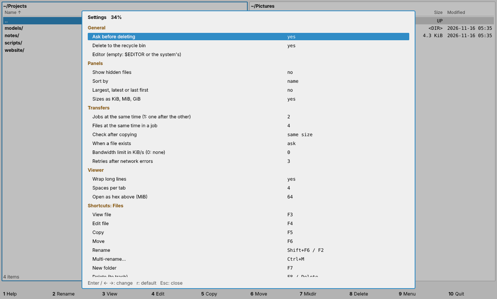
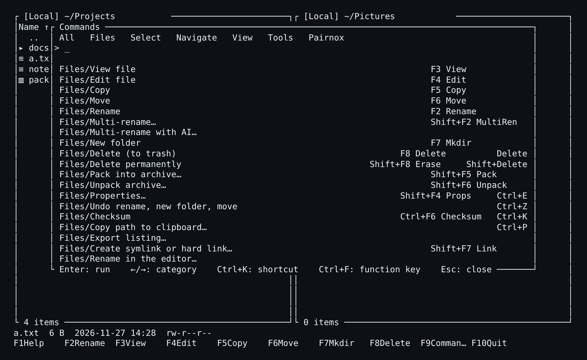
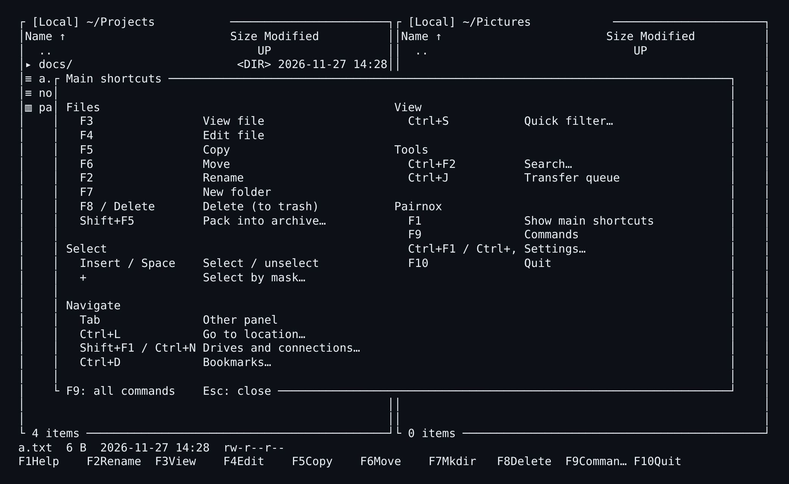
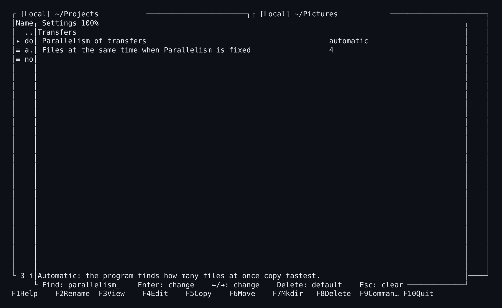

Two panes. Every file.
Pairnox is a fast twin-pane file manager for your desktop and your terminal. Local folders, servers and archives, all driven from the keyboard.
What it does
One core written in Rust, two front ends that behave the same way.
Desktop and terminal
A Qt window and a terminal interface from the same core, with the same commands and keys.
Keyboard first
No toolbars. F9 finds any command, F1 shows the shortcuts, and every key can be changed.
Local, remote, archives
Folders, SFTP, SMB, WebDAV, S3 and archives (ZIP, 7-Zip, tar, RAR) with the same commands.
Built-in viewer
Text, hex, Markdown, Word, spreadsheets, slides, PDF, 3D models and pictures, also as a quick view.
Reliable transfers
A background queue with verification, bandwidth limits and resume after a crash.
Multi-rename
Templates with a live preview of the new names, or rules written by Claude.
Remote agent
A small static agent for Linux servers, over SSH or mutual TLS, for fast remote work and server-to-server copies.
Plugins and scripts
TypeScript in a sandbox, tested with pnxr test, optionally written with Claude.
The pnxr command line
Everything the windows do is also available from scripts and shells.
Each feature is described in the manual.
Screenshots
The same tool in both forms. Click an image to enlarge it.
Desktop window

Terminal interface



Download
Always the latest release, straight from GitHub Releases.
| System | File | Size | SHA-256 |
|---|
Install notes
Linux
Make the AppImage executable (chmod +x Pairnox*.AppImage) and run it. It contains the window and pnxr. Releases so far are for x86_64; the static pnxr-agent is also built for aarch64.
Windows
Installer and portable zip are planned. The app is not signed yet, so Windows SmartScreen may warn: choose "More info" then "Run anyway".
macOS
A dmg for Apple Silicon and Intel is planned. The app is not signed yet: right-click it, choose Open, and confirm.
Build from source
Any system with Rust and a C compiler can build the terminal interface; the window needs Qt 6.4 or later.
git clone https://github.com/dbuffoni/Pairnox cd Pairnox cargo build --release